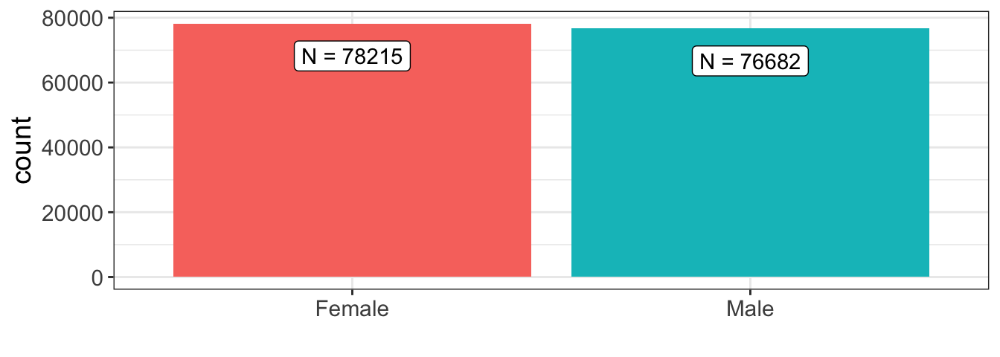
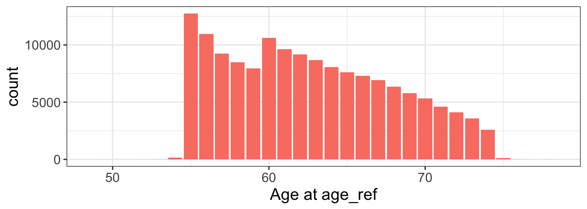
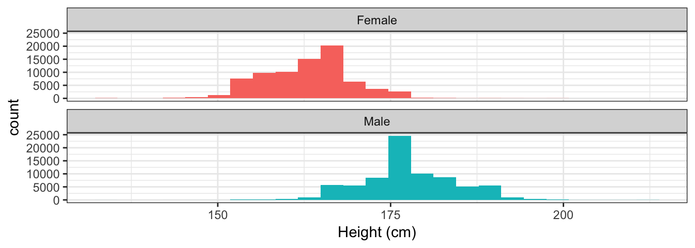
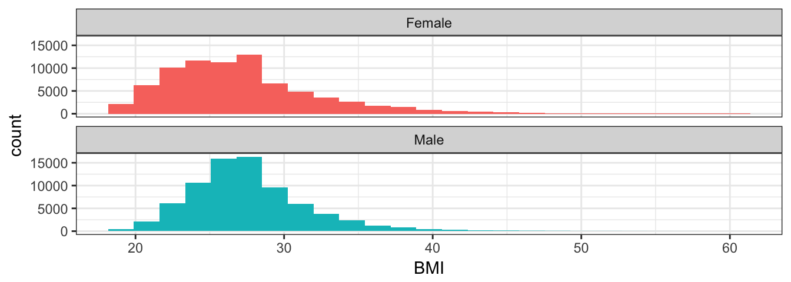

Info about PLCO data here. The PLCO data has 154897 total samples.


| Min. | 1st Qu. | Median | Mean | 3rd Qu. | Max. | NA’s |
|---|---|---|---|---|---|---|
| 49 | 58 | 62 | 62.64 | 67 | 78 | 4920 |

| sex | minimum | q1 | median | mean | q3 | maximum |
|---|---|---|---|---|---|---|
| Female | 135 | 160 | 162.6 | 163.1 | 167.6 | 198.1 |
| Male | 135 | 172.7 | 177.8 | 177.8 | 182.9 | 213.4 |

| sex | minimum | q1 | median | mean | q3 | maximum |
|---|---|---|---|---|---|---|
| Female | 18.51 | 23.46 | 26.63 | 27.24 | 29.69 | 60 |
| Male | 18.51 | 25.02 | 27.31 | 27.59 | 29.56 | 60 |
| 0 | 0.06 | 0.09 | 1 | |
|---|---|---|---|---|
| count | 137494 | 2581 | 3293 | 11529 |
| proportion | 0.8876 | 0.01666 | 0.02126 | 0.07443 |
values of diabynm. It is unclear to me what the non-binary values mean
| 0 | 0.58 | 0.67 | 1 | |
|---|---|---|---|---|
| count | 56462 | 3061 | 2408 | 92966 |
| proportion | 0.3645 | 0.01976 | 0.01555 | 0.6002 |
values of ASPIRINnm
| 0 | 0.78 | 0.86 | 1 | |
|---|---|---|---|---|
| count | 26817 | 2733 | 3213 | 122134 |
| proportion | 0.1731 | 0.01764 | 0.02074 | 0.7885 |
values of NSAIDSYnm
| 0 | 0.44 | 0.64 | 1 | |
|---|---|---|---|---|
| count | 69272 | 2103 | 2850 | 80672 |
| proportion | 0.4472 | 0.01358 | 0.0184 | 0.5208 |
values of SMK_EVERYnm
| 0 | 1 | 1.1 | 1.58 | 2 | 3 | 4 | |
|---|---|---|---|---|---|---|---|
| count | 69272 | 19626 | 2820 | 3949 | 19410 | 19773 | 20047 |
| proportion | 0.4472 | 0.1267 | 0.01821 | 0.02549 | 0.1253 | 0.1277 | 0.1294 |
values of SMK_EVERYnm = pack-years, study- and sex-specific quartiles. Coding: 0=Never smoker, 1=<=Q25; 2=Q25-50; 3=Q50-75; 4=>Q75
| 0 | 0.51 | 1 | |
|---|---|---|---|
| count | 37312 | 2550 | 38353 |
| proportion | 0.477 | 0.0326 | 0.4904 |
table of hrt_ref_pmy: postmenopausal hormone use (y/n, females only)
| High.school.graduate | Some.college.or.tech | More.than.college.grad | |
|---|---|---|---|
| count | 39725 | 56850 | 57903 |
| proportion | 0.2565 | 0.367 | 0.3738 |
counts reflect dichotomizing variables education_(1-3)nm as > 0, since there were some non-binary values for each variable.